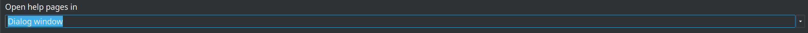
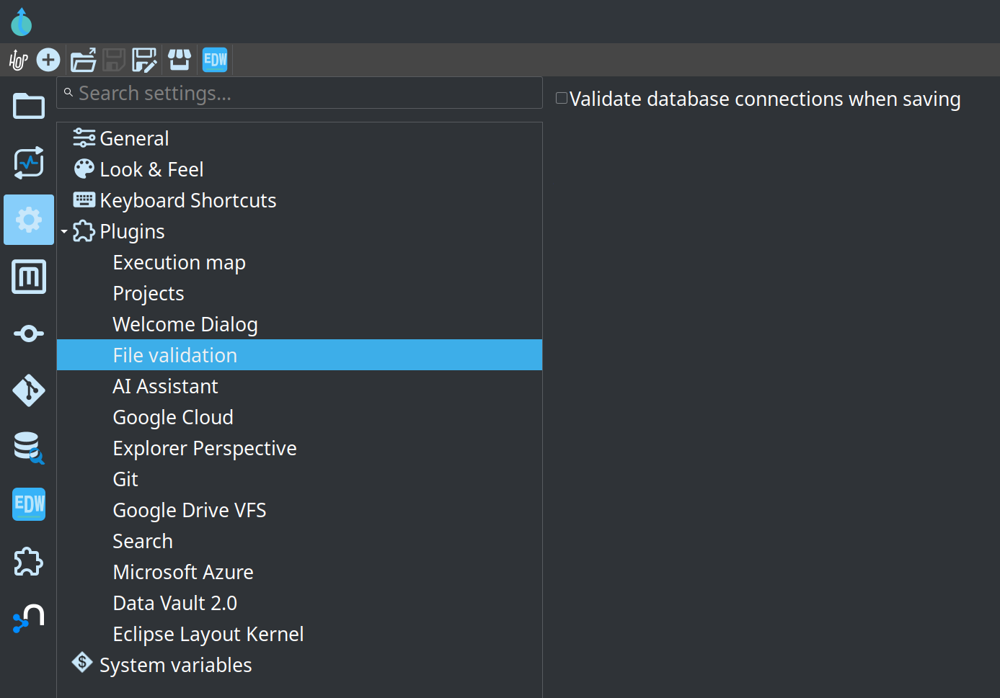
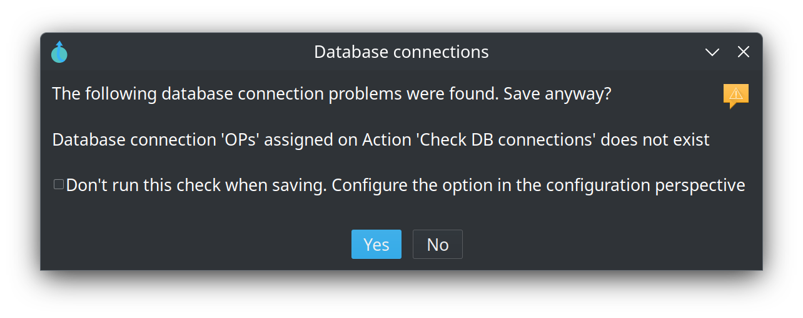

Configuration Perspective
Icon:
Keyboard shortcut: CTRL-Shift-C
Description
The configuration perspective offers a central location for all Apache Hop configuration options.
Usage
The perspective lists its sections in a tree on the left. Selecting one shows its options on the right; the search box above the tree finds an option by name across all of them.
-
General: how Apache Hop and Hop GUI behave - confirmations, tooltips and dialog positions.
-
Look & Feel: how Hop GUI is drawn on your desktop or in your browser.
-
Plugins: one entry per plugin that contributes options, including Search, the Explorer perspective and AI Assistant. Every option is listed in Plugin options reference below.
-
System variables: set and inspect the Apache Hop global variables.
-
Security: how a session is authenticated, split over General, Basic, External and OAuth sub-tabs. Until authentication is turned on the session is unrestricted and anyone can change these settings, which the tab says at the top.
-
Keyboard shortcuts: the shortcuts currently in effect, with the action each one triggers.
Detailed options overview
General
The General tab holds the options that control how Hop GUI behaves rather than how it looks. The tables below follow the sections of the tab.
| Option | Description | Default | ||
|---|---|---|---|---|
Hop configuration filename |
Where Apache Hop stores
|
|
||
Preview data batch size |
How many rows are fetched when previewing from the pipeline run toolbar or a transform preview dialog. INFO: this complements the preview setting of the native local pipeline run configuration, reachable through the |
1000 |
||
Use database cache |
Cache relational database metadata so repeated lookups of tables, fields and types do not go back to the server. |
yes |
||
Reopen tabs on startup |
Reopen the files that were open when Hop GUI last closed, and select the one that was active. |
yes |
||
Enable embedded terminal |
Show the embedded terminal in the bottom panel. Clear this on desktops where that terminal misbehaves; search, the database workbench and the VFS file explorer stay available either way. Hop Web has no embedded terminal. Excluding |
yes |
||
Reload file if changed on filesystem |
Reload a pipeline or workflow when it changes outside Hop GUI, for example after a |
no |
||
Sort field names alphabetically in dropdowns |
Sort field names in dropdown lists alphabetically. When off, fields keep the order they arrive in from the incoming stream. |
yes |
||
Use global bookmarks in the file dialog |
Share the file dialog’s bookmarks across every project instead of keeping a separate set per project. |
yes |
||
Maximum execution logging text size |
The largest amount of log text held for the execution information perspective, in characters. Caps memory use on long-running or very chatty executions. |
2000000 |
Confirmation dialogs
Each option here controls one confirmation pop-up. Turning one off does not change what the action does, only whether Hop asks first. Every one of these dialogs can also be switched off from the dialog itself, with its Do not ask this again option.
| Option | Description | Default |
|---|---|---|
Show confirmation when exiting Hop |
Ask for confirmation before closing Hop GUI. |
yes |
Show copy or distribute dialog when drawing a hop |
Ask whether rows should be copied to, or distributed round-robin over, the following transforms when a second hop is drawn out of a transform. |
yes |
Show confirmation when splitting hops |
Ask before splitting a hop when a transform or action is dropped onto it. With this off, the hop is split without asking. Hops that a dropped item would split are drawn in bold. |
yes |
Show confirmation to save file when starting pipeline or workflow |
Ask whether to save a changed file before running it. With this off, the file is saved automatically on every run. |
yes |
Reset all to enabled (Includes Action/Transform warnings) |
Button. Switches every confirmation dialog back on, including the per-transform and per-action warnings that were dismissed with Do not ask this again. |
on click |
Tooltips
| Option | Description | Default |
|---|---|---|
Show tooltip when hovering over a hop or Action/Transform |
The master switch for the canvas tooltips. With this off, none of them appear, whatever is ticked under Tooltips in the Look & Feel tab. |
yes |
Show resolved variables in tooltips |
Show what a variable currently resolves to in the tooltip, rather than the |
yes |
Reset all to enabled |
Button. Switches every tooltip option back on. |
on click |
Dialog positioning
| Option | Description | Default |
|---|---|---|
Remember dialog positions |
Reopen each dialog at the position and size it was last given. With this off, every dialog opens at its default position and size. |
yes |
Reset dialog positions after restart |
Keep remembered positions for the current session only, clearing |
no |
Clear dialog positions |
Button. Forgets every remembered dialog position and resets the perspective tree-panel widths to their defaults. Useful after moving between monitors of different sizes, when a dialog reopens off-screen. |
on click |
Look & Feel
The Look & Feel tab holds everything about how Hop GUI is drawn: fonts, colours, the canvas, and which columns and toolbars are shown. The tables below follow the sections of the tab.
Some of these settings only take effect after Hop GUI is restarted; the dialog says so where that is the case.
General appearance
| Option | Description | Default | ||
|---|---|---|---|---|
Preferred language |
The language Hop GUI is shown in.
|
English (US) |
||
Hide the menu bar |
Hide the menu bar. With it hidden, the menu is reachable from the Apache Hop icon in the upper left corner of Hop GUI. |
yes |
||
Dark mode |
Use the dark theme. On Hop Web and Windows this is a straight toggle; on macOS and other desktop platforms the theme follows the operating system. Changing it in Hop Web reloads the page. |
off on Windows; follows the OS on macOS and other desktops |
||
Follow system dark mode (Hop Web) |
Take the light or dark setting from the system or browser. While this is on, the Dark mode option above is disabled. |
yes |
||
UI zoom level |
The zoom level pipelines and workflows open at. |
100% |
||
Icon size in workspace |
The size transform and action icons are drawn at on the canvas, in pixels. |
32 |
||
Line width on workspace |
The width hops are drawn with on the canvas, in pixels. |
1 |
||
Dialog middle percentage |
Where the divider between labels and input fields sits in dialogs, as a percentage of the dialog width. Raise it where a translation makes labels too wide for their column. |
35 |
macOS
This section only appears on macOS.
| Option | Description | Default |
|---|---|---|
Allow dialogs to open on any screen |
Off: transform, action and metadata dialogs follow the Hop window and stay above it. On: they open as windows of their own, which can be moved to another screen. |
no |
Fonts
| Option | Description | Default |
|---|---|---|
Fixed width font |
The fixed-width font for SQL, scripts, logs and similar editors. |
platform default (Consolas / Monaco / Monospace) |
Font on workspace |
The font for transform and action names on the canvas. Notes that do not set a font of their own use it too. |
system font |
Pipeline and Workflow canvas
| Option | Description | Default |
|---|---|---|
Show canvas grid |
Draw the dotted alignment grid behind pipelines and workflows. |
no |
Canvas grid size |
The spacing of that grid, in pixels. Transforms and actions snap to it. |
16 |
Show viewport |
Show the viewport, the small overview of the whole pipeline or workflow in the bottom right corner of the canvas. |
yes |
Use double click on canvas |
Enabled: double-click a transform or action icon to open its properties; a single click opens the context dialog. Disabled (the default): a single click on the icon opens the context dialog, and a click on the name opens the properties. See Canvas mouse gestures for every click in both modes. |
no |
Use right click for the context dialog |
A right click (Ctrl-click or a two-finger click on macOS) opens the context dialog of whatever is under the pointer, and a left click never does: it selects, clears the selection, or presses a badge. Names and badges still open their editors on a left click. See Canvas mouse gestures for every click in both modes. |
no |
Use menus instead of the context dialog |
Transforms, actions, hops and notes show their actions in a pop-up menu with a submenu per category rather than in the context dialog. A click on the empty canvas keeps the context dialog while the palette tree is hidden, since that is where new transforms and actions are searched for; with the palette shown, the empty canvas gets a menu of the pipeline and workflow actions instead. The click that opens the menu is the same one that opens the context dialog. |
no |
Draw border around Action/Transform names on canvas |
Draw a border around the names of transforms and actions, which helps where names overlap the icons behind them. |
no |
Enable infinite move |
Pan the canvas in every direction without being stopped at the origin, so a diagram can be built out to the left of or above where it started. |
no |
Disable zoom scrolling |
Stop the mouse scroll wheel zooming the canvas in and out. Useful on trackpads where scrolling and zooming are easy to confuse. |
no |
Metrics above selected running transforms? |
While a pipeline runs, draw its metrics above the transforms that are selected. |
yes |
Tooltips |
One checkbox per kind of tooltip the canvas shows when the mouse rests on something. Untick one to stop only that kind. Show tooltip when hovering over a hop or Action/Transform, in the Tooltips section of the General tab, switches all of them off at once.
|
all on |
Auto-layout
These settings control the Arrange action, which lays a pipeline or workflow out automatically.
| Option | Description | Default |
|---|---|---|
Layout direction |
The direction the graph flows from start to end: left to right, right to left, top to bottom or bottom to top. |
Left to right |
Layer spacing |
The distance between consecutive layers, along the flow direction, in pixels. |
150 |
Node spacing |
The distance between nodes within one layer, across the flow direction, in pixels. |
120 |
Crossing-reduction iterations |
How many barycenter sweeps are used to pull crossing hops apart. Higher is tidier but slower on large diagrams. |
4 |
Move notes with nearest node |
Move each note along with the transform or action it sits closest to. Notes that are not near any of them stay where they are. |
yes |
Tables and grids
| Option | Description | Default |
|---|---|---|
Show toolbar |
Show a toolbar above table grids with cut/copy/paste, move row up/down, go to column and table views. Applies to preview dialogs, transform settings and similar grids. |
yes |
Show text editor toolbar |
Show a toolbar above multi-line text editors (SQL, scripts and similar fields) with cut/copy/paste, undo/redo and find/replace. |
yes |
Maximum data grid cell length |
The most characters drawn in one cell of a data grid: the row preview, the data grid transform and the rows viewers. Longer values are only shortened on screen; click a cell to see the whole value in place, or use the expand icon to open it in the multi-line editor. Copying, exporting and saving always use the full value. Set it to 0 to stop shortening. Configuration grids are never shortened, and this has no effect in Hop Web. |
50 |
Show line breaks as symbols in data grid cells |
Draw line breaks and tabs inside a data grid cell as symbols on a single line. With this off, a value containing a line break is cut at the first break and marked with an ellipsis. Either way this only changes how the cell is drawn: clicking it shows the whole value, and copying or exporting keeps every line break. |
no |
Metrics panel
Which columns the pipeline metrics grid shows while a pipeline runs. Hiding a column does not stop the metric being collected.
| Option | Description | Default |
|---|---|---|
Show units in cells |
Show the unit alongside each value in the metrics grid ( |
no |
Dynamic column resizing |
Widen metrics columns during a run as the values in them get wider. Turn this off to keep the widths you set by hand; View > Fit columns to content still packs them once, on demand. |
yes |
Show Input |
Show the Input column: rows read from an external source, such as a file or a database. |
yes |
Show Read |
Show the Read column: rows read from incoming hops. |
yes |
Show Output |
Show the Output column: rows written to an external target. |
yes |
Show Updated |
Show the Updated column: rows updated in an external target. |
yes |
Show Rejected |
Show the Rejected column: rows sent down an error handling hop. |
yes |
Show Buffers Input |
Show the Buffers Input column: how full each transform’s input row buffer is, which is where a bottleneck shows up first. |
yes |
Show Data volume |
Show the Data volume column, the row-based byte count. Only collected when the |
yes |
Show Data volume in |
Show the Data volume in column, bytes read from the input stream. Needs |
yes |
Show Data volume out |
Show the Data volume out column, bytes written to the output stream. Needs |
yes |
Plugins
The plugins tab contains configuration options that are provided by the various plugins in Apache Hop.
The following plugins are available by default:
-
Azure Blob Storage VFS configuration options.
-
Dropbox VFS configuration options.
-
Explorer perspective: Configuration options for the file explorer perspective:
-
The initial depth to load not lazily: Controls how many folder levels are loaded immediately when opening folders.
-
The maximum file size to load: Sets the maximum file size (in MB) that will be loaded when opening files.
-
Show file explorer panel by default: When enabled, the file explorer panel (project tree) is shown by default when opening the explorer perspective. When disabled, the panel starts hidden.
-
Open help pages in: Where Hop GUI opens documentation from Help buttons and F1. External browser (default) uses the system browser. Hop GUI tab opens an HTML tab in the File Explorer perspective. Dialog window opens a modeless help window on top of the current dialog or main window so you can keep editing.

-
-
Google Cloud configuration options (service account JSON key file).
-
Google Drive VFS configuration options.
-
Project configuration options
-
Welcome Dialog: specify whether to show or hide the welcome dialog when Hop GUI starts.
-
File validation: when enabled (the default), saving a pipeline or workflow warns if a transform or action references a relational database connection that is not in the project metadata. You can still save. Connection names that still contain a variable such as
'${CONNECTION}'after the current environment is applied are skipped, because the name cannot be decided at design time. The same check also runs when you Verify a pipeline or workflow. Hop does not try to open a JDBC connection as part of this check.
The warning lists the missing connections. Yes saves anyway, No cancels the save. Check Don’t run this check when saving to turn the option off; you can turn it back on here.

Plugin options reference
Every option each plugin adds to the Plugins section, with what it does and what it falls back to when it has never been set. Generated from the plugins themselves, so it covers the plugins shipped with Apache Hop; a plugin you install yourself adds its own section to the perspective that is not listed here.
Anything set here can also be set with hop-conf, and ends up in hop-config.json.
AI Assistant
These options are stored under hopAiConfig in hop-config.json.
| Option | Description | Default |
|---|---|---|
Enable the AI Assistant |
When disabled, the AI Assistant does not open and sends no prompts; saved conversations stay readable in its perspective. Default is off. Before applying AI changes, work on a Git feature branch so you can revert the project if needed. |
|
Default AI provider |
Named AI Provider metadata used by the AI Assistant. Pipelines can still pick a different provider. Accepts variables. |
|
Allow sending full XML |
Second gate for the session "Include full XML" checkbox. Off by default. Full XML is large and can contain SQL, filenames and notes. Leave this off unless you need it, and only after secrets live in environment variables or a keystore. |
|
Keep conversations after Hop GUI closes |
Saves the AI Assistant sessions of each project as plain text (questions, answers, proposals and options, not the context that was sent) in the audit folder, ${HOP_AUDIT_FOLDER}, next to the other things Hop GUI remembers per project. That folder is on your machine and outside the project, so the conversations do not end up in version control. Uncheck to start every Hop GUI session without conversations. |
|
When a window closes during a question |
What happens to a question that is still waiting for its answer when you close the AI Assistant window or dock. Finish in the background records the answer in the session, so you find it when you open the session again. Cancel stops waiting, as Stop does, and no answer is recorded. Exiting Hop GUI always stops a question that is still waiting. |
|
Extra context |
Standing notes sent with every AI Assistant question, such as project conventions. Empty by default: the notes that come with the AI plugin already say that metadata names are case-sensitive, that pipeline and workflow run configurations are different types, and that Hop is not Kettle. Accepts variables. |
|
Context files |
One VFS path per line. Files that exist are appended to the system prompt as instructions the assistant follows; missing files are skipped. Variables are resolved. Empty by default. Only list files you wrote for the AI Assistant, for example ${PROJECT_HOME}/ai-assistant.md: an AGENTS.md is usually written for coding agents, and a file from someone else's project can steer the assistant. Accepts variables. |
Apache Calcite SQL formatter
These options are stored under calciteSqlFormat in hop-config.json.
| Option | Description | Default |
|---|---|---|
Indentation (spaces) |
Number of spaces to indent nested SQL. Calcite default is 4; Hop default is 2. |
|
Line length |
Preferred maximum line length. 0 means no maximum. |
|
Clause starts a new line |
Start FROM, WHERE, GROUP BY, HAVING, WINDOW and ORDER BY on a new line. |
|
Clause is followed by a new line |
Clause (FROM, WHERE, GROUP BY, HAVING, WINDOW, ORDER BY) is followed by a new line |
|
Always use parentheses |
Wrap every expression in parentheses even when operator precedence does not require it. |
|
Leading comma |
Commas in SELECT, GROUP BY and ORDER clauses should appear at the start of the line. |
|
SELECT items on separate lines |
Put each item in the SELECT list on its own line. |
|
FROM items on separate lines |
Put each item in the FROM list on its own line. |
|
WHERE items on separate lines |
Put each item in the WHERE list on its own line. |
|
GROUP BY items on separate lines |
Put each item in a GROUP BY list on its own line. |
|
ORDER BY items on separate lines |
Put each item in an ORDER BY list on its own line. |
|
CASE clauses on new lines |
Put WHEN, THEN and ELSE of a CASE expression at the start of a new line. |
|
WINDOW declaration starts a new line |
Start a WINDOW declaration on a new line. |
|
WINDOW items on separate lines |
Put each item in a WINDOW list on its own line. |
|
Keywords in lower case |
Print SQL keywords such as SELECT and FROM in lower case. |
|
Quote all identifiers |
Quote every identifier even when the dialect would accept it unquoted. |
|
Database Perspective
These options are stored under database-perspective in hop-config.json.
| Option | Description | Default |
|---|---|---|
Automatically connect when executing SQL |
Connect the SQL editors database without asking if it is not already connected. You can also enable this from the dialog that appears when the option is off. |
|
Select the executed SQL in the editor |
After Run or Run all, highlight only the statement(s) that were sent to the database. A leftover clause after a semicolon is left unselected. |
|
Query row limit |
Maximum number of rows shown for a SELECT in the SQL editor and for table preview. A SQL LIMIT above this value is still capped here so a SELECT * does not pull the whole table. |
|
Dropbox
These options are stored under dropbox in hop-config.json.
| Option | Description | Default |
|---|---|---|
Access token |
The Dropbox access token used to authenticate. Generate one for an app in the Dropbox App Console; it grants whatever access that app was given. Accepts variables. |
Explorer Perspective
These options are stored under explorer-perspective in hop-config.json.
| Option | Description | Default |
|---|---|---|
The initial depth to load not lazily |
The initial depth to load not lazily. Accepts variables. |
|
The maximum file size to load |
The maximum file size to load. Accepts variables. |
|
Show file explorer panel by default |
When enabled, the file explorer panel (project tree) is shown by default when opening the explorer perspective |
|
Open help pages in |
Choose where documentation opens: the system browser, a tab in the File Explorer perspective, or a dialog on top of the current window. |
|
Select active file in tree automatically |
Automatically select the active tab file in the file explorer tree on the left hand side when it is shown in a tab. |
|
Maximum undo operations |
The maximum number of undo/redo snapshots kept for pipelines, workflows and table editors. Default is 100. Accepts variables. |
|
File validation
| Option | Description | Default |
|---|---|---|
Validate database connections when saving |
When saving a pipeline or workflow, warn if a transform or action references a database connection that is not in the project metadata. Names that still contain a variable such as ${CONNECTION} after resolving the current environment are skipped. Saving is never blocked. |
|
Formula
| Option | Description | Default |
|---|---|---|
Fast formula evaluation |
Evaluate the formulas that only use the supported functions and operators without Apache POI, which is many times faster. Formulas using anything else are always evaluated with Apache POI. Clear this to evaluate every formula with Apache POI. A pipeline can also switch it off with the variable HOP_FORMULA_FAST_PATH_ENABLED set to N. |
|
Git
These options are stored under gitConfig in hop-config.json.
| Option | Description | Default |
|---|---|---|
Enable the git GUI plugin |
Switches the git plugin on or off. With it off the git perspective and the git decorations in the file explorer are hidden, and no repository is opened. |
|
Search parent folders for git repository |
Look in parent folders for the git repository rather than only in the project folder. Needed where the project sits in a subfolder of a larger repository. |
|
Fetch remote changes automatically |
Enables background fetching of remote updates every 20 minutes. |
|
Ignore position in the visual diff |
Do not mark a transform or action as changed when it was only moved. |
|
Google Cloud
These options are stored under googleCloud in hop-config.json.
| Option | Description | Default |
|---|---|---|
Account key file |
The path to a Google Cloud service account JSON key file. Accepts variables. |
|
Scan folders to find last modified data |
Scans all files in a folder and uses the most recent modification data as the folder modification data. This may have a performance impact in buckets with lots of files. |
|
Max number of attempts |
Maximum number of attempts for a single request, including the first one. Accepts variables. |
|
Initial retry delay (seconds) |
Delay before the first retry, in seconds. Accepts variables. |
|
Retry delay multiplier |
Retry delay multiplier. Accepts variables. |
|
Maximum retry delay (seconds) |
Ceiling for the retry delay once the multiplier has been applied, in seconds. Accepts variables. |
|
Total timeout (minutes) |
Deadline for a request including all of its retries, in minutes. Accepts variables. |
|
Initial RPC timeout (seconds) |
Timeout for the first attempt, in seconds. Raised to the max RPC timeout if that is lower. Accepts variables. |
|
RPC Timeout Multiplier |
RPC Timeout Multiplier. Accepts variables. |
|
Max RPC timeout (seconds) |
Ceiling for a single attempt timeout, in seconds. Never lower than the initial RPC timeout. Accepts variables. |
|
Connect timeout (seconds) |
Socket connect timeout, in seconds. Accepts variables. |
|
Read timeout (seconds) |
Socket read timeout, in seconds. Accepts variables. |
|
Retry non-idempotent operations |
Also retry writes (create, delete, starting an upload). Google Cloud Storage only retries reads by default, so without this the retry settings above do not apply to writing files. Note that a retried delete can report "not found" when the first attempt already succeeded, and a retried create overwrites. |
|
Cache TTL (seconds) |
How long to cache folder listing results (in seconds, default 5). If not set, falls back to 10 seconds. Accepts variables. |
|
Read block size |
How many bytes one download request fetches when a file is read, like 8MB. Leave empty for 8MB. Transforms that fetch ahead, such as Text File Input, download blocks of this size, several at a time, each with one request. Accepts variables. |
Google Drive VFS
These options are stored under googleDrive in hop-config.json.
| Option | Description | Default |
|---|---|---|
Path to a Google Drive credentials JSON file |
Please note that this is a global configuration option and while you can specify variables that these will be not include project specific settings. Accepts variables. |
|
Path to a tokens folder for credential caching |
Pick a safe folder to store these tokens. Accepts variables. |
Linter
| Option | Description | Default |
|---|---|---|
Enable Linter |
Enable or disable the Hop Linter globally |
|
Lint Automatically While Editing |
Re-run lint checks shortly after you change an open pipeline or workflow. When disabled, files are only linted on open, save, or on demand. |
|
Include Lint Rules in Pipeline Verify |
Add YAML/custom lint findings to the native pipeline verify Problems tab |
|
Include Lint Rules in Workflow Verify |
Add YAML/custom lint findings to the native workflow verify Problems tab |
|
Include Hop Native Checks in Lint Runs |
Also run Hops built-in pipeline/workflow verify checks during lint project/file scans |
|
Show Lint Indicators on Canvas |
Show the lint totals overlay (top-left of the canvas) and the severity badges on transforms/actions in open pipeline and workflow editors |
|
Mark Ignored Transforms and Actions |
Draw a dashed outline and a small badge on a transform or action whose lint findings have been marked as expected, so the absence of a warning reads as a decision rather than as a check that never ran |
|
Configuration File |
Path to hop-lint.yml configuration file (leave empty for project-specific). Accepts variables. |
|
Block Git Commits on Lint Failures |
When enabled, lint checks run before Explorer git commits and block the commit if issues are found |
|
Block Commits on Warnings |
When enabled, warnings also block commits. When disabled, only errors block commits |
|
Include Metadata in Pre-Commit Checks |
Also lint staged metadata files (e.g. metadata/**/*.json) during pre-commit checks |
|
Microsoft Azure
These options are stored under azure in hop-config.json.
| Option | Description | Default |
|---|---|---|
Account |
The account to use for the Azure VFS. Accepts variables. |
|
Account key |
The key to use for the Azure VFS. Accepts variables. |
|
Alternative Local Storage |
URL of Azure emulator/local storage. Accepts variables. |
Projects
These options are stored under projectsConfig in hop-config.json.
| Option | Description | Default |
|---|---|---|
Enable the projects plugin |
Switches the projects plugin on or off. With it off, Hop GUI drops the project and environment selectors and files are addressed by path alone. |
|
Use of a project is mandatory |
Refuse to run a pipeline or workflow unless a project is selected. Catches runs against the wrong configuration on a shared installation. |
|
Use of an environment is mandatory |
Refuse to run a pipeline or workflow unless a lifecycle environment is selected, so every run has explicit environment variables behind it. |
|
The default project to use when none is specified |
The default project to use when none is specified. Accepts variables. |
|
The default environment to use when none is specified |
The name of the default environment to use when none is specified. Accepts variables. |
|
The parent project to propose when creating projects |
The project proposed as the parent when a new project is created. A child project inherits its parent's variables and configuration. Accepts variables. |
|
The standard projects folder for new projects |
The standard projects folder for new projects. Accepts variables. |
|
The project configuration filename for new projects |
The name given to the configuration file of a newly created project, relative to the project folder. Accepts variables. |
|
Clear DB cache when switching project/environment |
Empty the database cache when switching project or environment. Keep this on where environments point at different databases that share connection names, so metadata cached for the previous one is not reused. |
|
Sort the last used projects alphabetically |
List the last used projects alphabetically rather than most recently used first. |
|
Search
These options are stored under search in hop-config.json.
| Option | Description | Default |
|---|---|---|
Minimum characters for content search |
Object names are always searched. File and field content is only searched when the query has at least this many characters (default 3). Prevents floods of hits while typing. Accepts variables. |
|
Maximum search results |
Hard limit on the number of results built for Hop GUI search (default 500). Further matches are not collected so the UI stays responsive. Accepts variables. |
|
Maximum matches per text file |
Stop scanning a single text file after this many matching lines (default 20). Accepts variables. |
|
Maximum text file size for search (MB) |
Text files larger than this are skipped for content search (default 1 MB). Use dedicated tools for million-row CSV/JSON files. Accepts variables. |
|
Include project text files in content search |
When enabled, CSV, JSON, SQL and other project text files are content-searched (subject to size and match limits). Open text files are always eligible. Disable to search only pipelines, workflows, metadata and open files. |
|
Search as you type |
When enabled, search runs automatically after a short pause while typing. Press Enter to search immediately either way. |
|
Search-as-you-type delay (ms) |
Milliseconds to wait after the last keystroke before running a live search (default 300). Accepts variables. |
|
Welcome Dialog
| Option | Description | Default |
|---|---|---|
Show welcome dialog at the startup of the Hop GUI |
Show the welcome dialog when Hop GUI starts. The dialog has a Don't show this at startup option of its own that sets the same thing, and the ${HOP_NO_WELCOME_DIALOG} variable suppresses it whatever is set here. |
|
System Variables
The System Variables tab contains the available system variables in Hop GUI.
Check the Variables documentation for more information about the available variables and their default values.